18/04/2025 — Đừng bao giờ cho bệnh nhân đau ngực về nhà mà chưa đo troponin. Blốc nhánh ngụy trang là gì? Và, và, và….
Bản dịch tiếng Việt của bài "Never send a chest pain patient home without measuring troponin. What is masquerading bundle branch block? And, and, and…." – Dr. Smith’s ECG Blog. Giữ nguyên toàn bộ 16 hình ảnh của bản gốc.
Bài viết của Hans Helseth, với phần biên tập và bình luận của Smith và Grauer
Một người đàn ông 84 tuổi có tăng huyết áp mạn tính và bệnh thận mạn (CKD) đến khám tại một phòng khám chăm sóc ban đầu. Ông kể bị mệt mỏi và choáng váng theo tư thế trong vài tuần qua. Ông không có triệu chứng khi ngồi, nhưng thấy choáng váng khi đứng và đi lại. Một tuần trước, ông chơi một vòng golf và bị một cơn đau ngực trong lúc chơi, cơn đau tự hết. Lúc đến khám, ông không đau ngực hay khó thở. Huyết áp tư thế được đo và xác nhận hạ huyết áp tư thế đứng.
Điện tâm đồ 1 cũng được ghi:

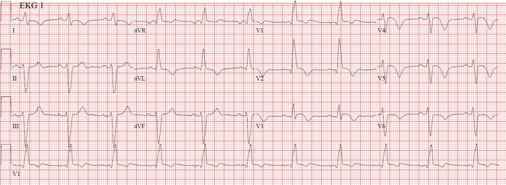
Bác sĩ phòng khám gia đình có sẵn một điện tâm đồ từ 20 năm trước để đối chiếu. Khi xem lại ca này, tôi đã không tìm được bản ghi đó. Điện tâm đồ 1 được đọc là “thay đổi đáng kể” so với bản ghi 20 năm trước. Bệnh nhân được cho về nhà với chẩn đoán hạ huyết áp tư thế đứng. Kế hoạch là tái khám trong tuần để ghi lại điện tâm đồ và làm xét nghiệm.
Điện tâm đồ 1 bất thường nghiêm trọng. Có nhịp xoang và blốc hai phân nhánh (blốc nhánh phải và blốc phân nhánh trái trước) (RBBB + LAFB). Thật ra, sóng R ở chuyển đạo I hơi rộng, điều này không điển hình cho RBBB+LAFB. Hình dạng phức bộ QRS ở đây là điển hình của blốc nhánh ngụy trang (masquerading bundle branch block, MBBB). Hình ảnh này đặc biệt đáng ngại và báo trước blốc AV còn mạnh hơn cả blốc hai phân nhánh đơn thuần (Xem bình luận của Ken Grauer bên dưới để biết thêm về MBBB).
_________
Smith: Blốc nhánh ngụy trang (masquerading BBB) là thuật ngữ ngụ ý hình ảnh trông như RBBB hoàn toàn ở các chuyển đạo trước tim và trông như LBBB ở các chuyển đạo chi. Dĩ nhiên, không thể CÙNG LÚC có RBBB hoàn toàn và LBBB mà vẫn còn dẫn truyền từ nút xoang xuống thất. Nếu như vậy, cách duy nhất để bệnh nhân còn sống là nhờ một nhịp thoát thất. Vì thế tôi hoài nghi rằng thuật ngữ này có ý nghĩa thực tiễn nào. Thực chất nó chỉ là một dạng nặng của RBBB + LAFB, và đến giờ tất cả chúng ta đều nên biết sự kết hợp này mang tiên lượng tồi tệ đến mức nào.
_________
Có sóng Q ở V1-V3 (nhồi máu cơ tim chưa xác định tuổi). Có ST chênh lên ở V1-V5 (STE đồng hướng ở V1-V3) và phần cuối sóng T đảo ngược trên toàn bộ các chuyển đạo trước tim.
Smith: Trong RBBB, đoạn ST lẽ ra phải chênh xuống tới 1mm ở V1-V3, ngược hướng với sóng R’ (hoặc hơn 1 mm trong trường hợp sóng R’ điện thế cao, như trong RVH), vì vậy BẤT KỲ STE nào ở V1-V3 trong RBBB đều là OMI cho đến khi chứng minh được điều ngược lại. Xem ca ví dụ ở cuối bài.
Smith: Sóng Q ngụ ý nhồi máu cơ tim là bán cấp, và sóng T đảo ngược ngụ ý đây có thể là nhồi máu bán cấp đã tái tưới máu, dù cũng có thể đang diễn ra.
___________
Do đó, ở một bệnh nhân có triệu chứng của hội chứng vành cấp (ACS), điện tâm đồ này là chẩn đoán tắc LAD bán cấp, có thể đã tái tưới máu. Biểu hiện lâm sàng trong ca này không điển hình cho OMI, nhưng đủ điển hình để cần đánh giá cấp cứu. Dựa vào điện tâm đồ này, lẽ ra bệnh nhân phải được chuyển ngay đến một trung tâm có PCI để đánh giá tim mạch thêm.
Bệnh nhân này có triệu chứng ACS không?
Smith: Tôi cho là có. Đã có một cơn đau ngực
Mô hình AI Queen of Hearts của PMCardio luôn hỏi điện tâm đồ có được ghi trong “quần thể sử dụng dự kiến” (Intended Use Population) hay không, vì nếu ghi cho mọi bệnh nhân, kể cả những người đến khám vì đau ngón chân, bạn sẽ gặp rất nhiều kết quả dương tính giả
Nhưng dù thế nào cô ấy cũng đọc đúng. Nghĩa là, ngay cả khi triệu chứng duy nhất chỉ là mệt mỏi và choáng váng, cô ấy vẫn sẽ nói OMI đã tái tưới máu.
Queen nhận ra OMI đã tái tưới máu:

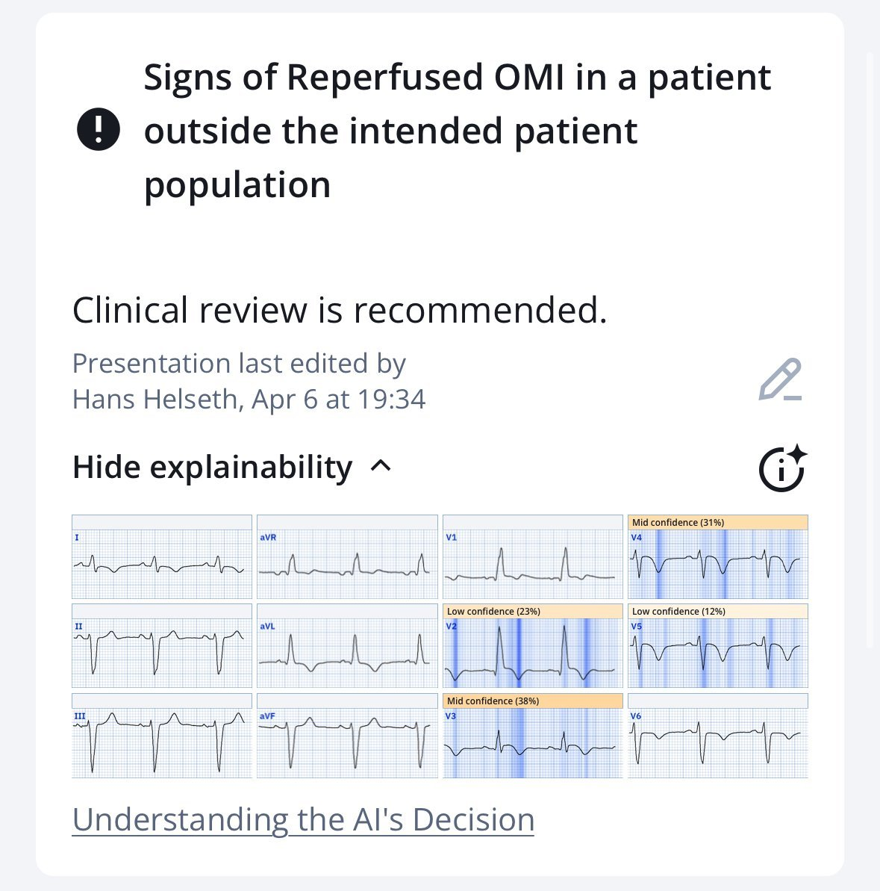
Nhưng thực tế bệnh nhân đã có một cơn đau ngực (thuộc quần thể sử dụng dự kiến):

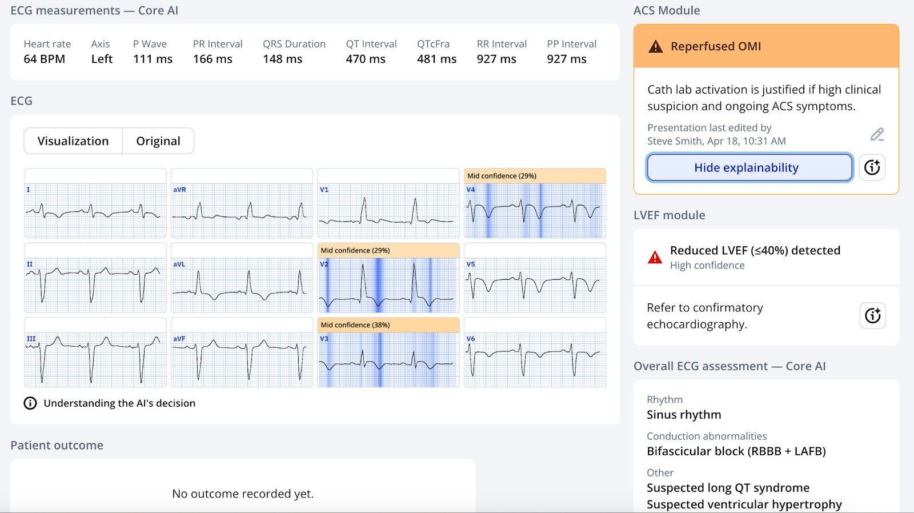
Giờ thì dĩ nhiên cô ấy nói “OMI đã tái tưới máu” (Reperfused OMI)
Hãy để ý rằng cô ấy cũng biết phân suất tống máu (LVEF) dưới 40%.
Ca bệnh tiếp diễn
Bệnh nhân được cho về nhà mà không hề xét nghiệm troponin.
Smith: điều này hoàn toàn không thể chấp nhận được. Troponin có lẽ đã rất rất cao do một OMI bán cấp diện rộng.
Năm ngày sau, bệnh nhân đang tập thể dục thì bị đau ngực lúc 19:30, kéo dài một giờ. Sau khi cơn đau ngực hết, ông trở nên lo lắng và cảm thấy tim đập nhanh lên. Ông đến khoa cấp cứu địa phương để được đánh giá, tại đây điện tâm đồ 2 được ghi, lúc này đã hết đau ngực:

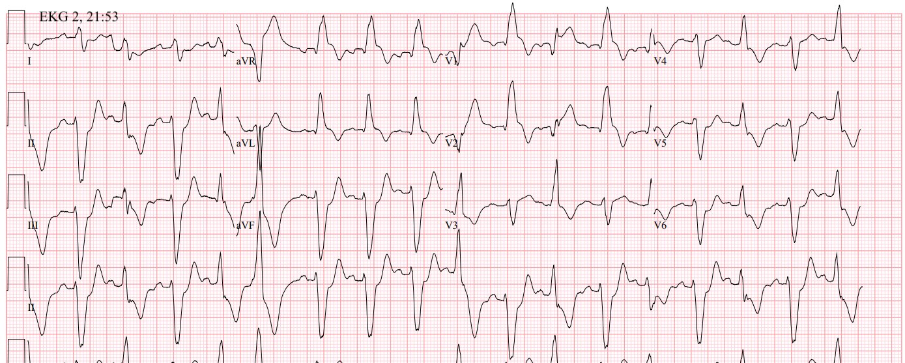
Điện tâm đồ này là chẩn đoán tắc LAD, một lần nữa nhiều khả năng là bán cấp và có thể đang tái tưới máu, dựa trên diễn tiến trước khi nhập viện. Vẫn có cùng hình ảnh MBBB như trước. Có nhịp nhanh xoang với các PVC biểu hiện nhiều mức độ hỗn hợp (fusion) khác nhau (Xem bình luận của Ken Grauer bên dưới để có phân tích chi tiết hơn về nhịp này). Có thể thấy ở đây cùng phân bố ST chênh lên như trên điện tâm đồ 1. Giờ còn có thêm ST chênh lên đồng hướng ở chuyển đạo aVL và ST chênh xuống đồng hướng ở các chuyển đạo dưới. Phức bộ ST-T thiếu máu cục bộ thấy rõ ở cả nhát xoang, PVC và nhát hỗn hợp, nhất là ở V2.
Queen of Hearts: OMI (Kết quả đầu ra - 0.96). Điều này gần như chẩn đoán OMI.
Lúc này các bác sĩ có sẵn một điện tâm đồ từ một năm trước để đối chiếu:

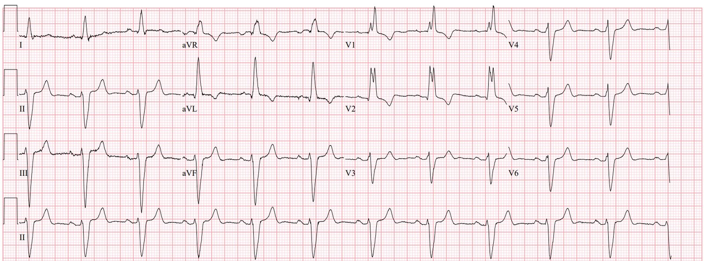
Như vậy hình ảnh blốc nhánh ngụy trang đã có từ trước, nhưng các phức bộ ST-T thiếu máu cục bộ do tắc LAD là mới.
Điện tâm đồ 2 không được nhận ra là tắc LAD cấp. Bệnh nhân chờ ở khoa cấp cứu (ED), nhưng vẫn không đau ngực.
Troponin I đầu tiên được gửi lúc 22:25 - 7.303 ng/mL
Smith: troponin tăng này là phần còn sót lại từ OMI trước và đang trên đà giảm? Hay do một OMI mới? Hay cả hai?
Điện tâm đồ 3 được ghi 2.5 giờ sau điện tâm đồ 2:

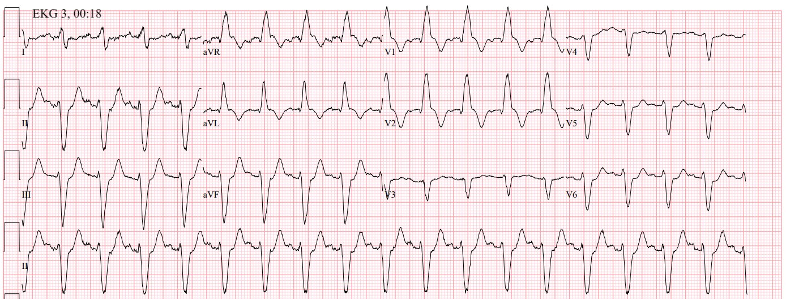
Các dấu hiệu đang cải thiện, gợi ý tái tưới máu, mặc dù vẫn còn ST chênh xuống do thiếu máu cục bộ ở các chuyển đạo dưới và bên.
Troponin được làm lại lúc 00:46 - 7.650 ng/mL. Đến lúc này, bệnh nhân được chẩn đoán “NSTEMI”.
Smith: giờ thì ta biết troponin đang tăng và là do một nhồi máu mới chồng lên.
Troponin lần ba được đo lúc 04:23 - 12.060 ng/mL. Bác sĩ cấp cứu bắt đầu sắp xếp chuyển bệnh nhân đến một trung tâm có PCI. Troponin lần bốn được đo lúc 07:09 - 18.073 ng/mL.
Khi đến trung tâm có PCI, điện tâm đồ 4 được ghi:

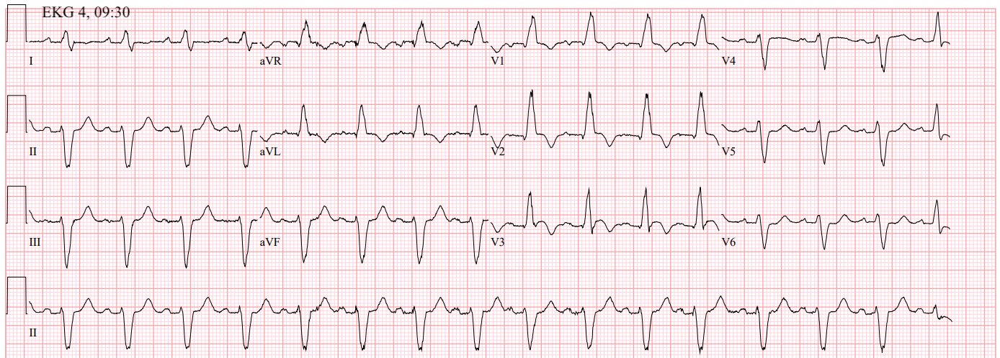
ST chênh xuống ở các chuyển đạo dưới và bên đã cải thiện so với điện tâm đồ 3. Vùng chuyển tiếp sóng R ở đây xảy ra tại V4 thay vì V3 như ở điện tâm đồ 3. V3 giờ có ST chênh lên đồng hướng, dù điều này có thể là hệ quả của thay đổi tăng tiến sóng R ở các chuyển đạo trước tim, mà thay đổi đó lại có thể do vị trí đặt điện cực trước tim. Dù không rõ triệu chứng của bệnh nhân lúc này, nhiều khả năng bản ghi này thể hiện vùng LAD tiếp tục được tái tưới máu.
Trước khi thông tim, troponin T độ nhạy cao được lấy lúc 09:37 - 3,669 ng/L.
Smith: Với cùng một kích thước nhồi máu, troponin I có giá trị gấp 5-10 lần troponin T. Vì vậy troponin I là 18,000 và troponin T là 3669 đều là những giá trị rất cao.
Chụp mạch vành được thực hiện lúc 10:31, gần 13 giờ sau khi bệnh nhân đến khoa cấp cứu:

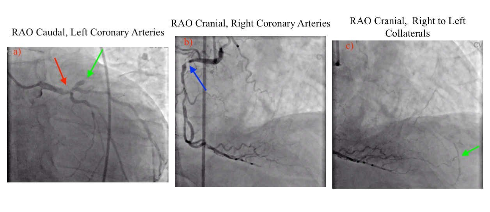
Mũi tên đỏ chỉ chỗ hẹp 50% đoạn xa thân chung động mạch vành trái, lan tới lỗ xuất phát của LAD. Mũi tên xanh lá ở hình A chỉ chỗ tắc hoàn toàn LAD đoạn gần. Mũi tên xanh dương chỉ chỗ hẹp 90% RCA đoạn gần. Mũi tên xanh lá ở hình C chỉ LAD đoạn mỏm được làm đầy nhờ tuần hoàn bàng hệ từ RCA.
Không có nhận xét nào về tính mạn tính của tổn thương LAD (là CTO, bán cấp hay cấp), nhưng có thể ước đoán hợp lý rằng tổn thương đã có từ một thời gian, có thể tắc rồi tái tưới máu nhiều lần trong những tuần trước khi nhập viện, dựa trên bệnh sử, điện tâm đồ hồi đầu tuần cho thấy LAD đã tái tưới máu, và troponin cao lúc nhập viện. Không thực hiện PCI. Thay vào đó, bệnh nhân được chuyển để tái thông mạch bằng phẫu thuật.
Smith: Một khả năng khác là, nếu có tắc hoàn toàn mạn tính LAD (CTO), thì hội chứng vành ở RCA cũng sẽ gây ra cùng một hội chứng lâm sàng và điện tâm đồ như vậy, vì thành trước khi đó phụ thuộc vào tuần hoàn bàng hệ từ RCA.
Siêu âm tim lúc 13:40 cho thấy:
- Chức năng tâm thu toàn bộ giảm nặng với EF ước tính 10-20%
- Kích thước thất trái tăng nhẹ
- Vô động toàn bộ vách và mỏm
- Giảm động các phân đoạn trước, trước bên và giữa thành sau
Troponin T cuối cùng được lấy lúc 17:23 - 3,475 ng/L. Mức tăng troponin đáng kể sau khi đến khoa cấp cứu gợi ý rằng nếu chuyển ngay đến trung tâm có PCI sau lần khám ở phòng khám gia đình đầu tuần thì có thể đã cứu được rất nhiều cơ tim.
Sau chụp mạch vành, bệnh nhân được chuyển đến đơn vị theo dõi từ xa (telemetry). Lúc 21:02, monitor tim của ông ghi được hình này:

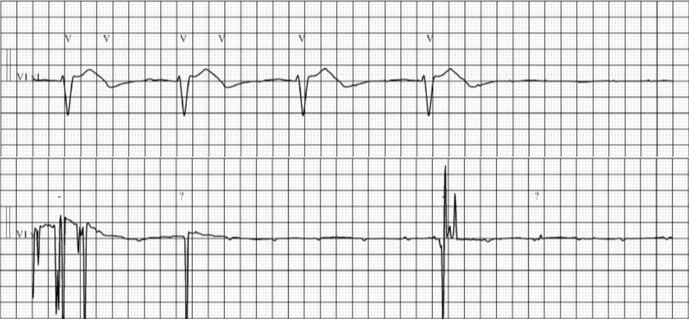
Hai dải nhịp V1 từ đơn vị theo dõi từ xa cho thấy blốc AV hoàn toàn. Ban đầu thấy rõ một nhịp thoát thất, nhưng nhanh chóng biến mất chỉ còn lại sóng P; đây là ngưng thất hoàn toàn. Rối loạn nhịp này có thể xảy ra ở bệnh nhân có bệnh hệ dẫn truyền dưới bó His nặng như blốc hai phân nhánh do RBBB và LAFB, vì chỉ còn một nhánh của hệ dẫn truyền, trong ca này là phân nhánh trái sau, có thể dẫn mỗi xung động trên thất xuống khắp các thất. Nếu nhánh đó ngừng hoạt động do thiếu máu cục bộ hoặc nguyên nhân khác, tim sẽ phải dựa vào một nhịp thoát thất. Nếu nhịp thoát thất cũng ngừng, bệnh nhân bị ngừng tim.
Bệnh nhân được dùng 3 x 1 mg epinephrine, 1 mg atropine, được đặt nội khí quản và bắt đầu truyền dopamine. Đạt được tái lập tuần hoàn tự nhiên (ROSC) sau 4 chu kỳ ép tim. Sau ROSC, điện tâm đồ 5 được ghi:

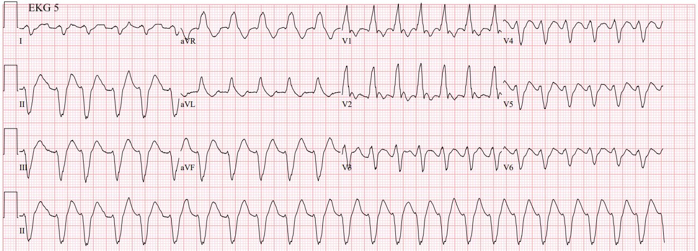
Bản ghi này được đọc là nhịp nhanh thất. Tuy nhiên, hình dạng QRS gần như giống hệt điện tâm đồ 4.
Thực tế, tôi tin rằng có thể thấy một số hoạt động nhĩ, nhất là ở đầu chuyển đạo II, nơi nhịp chậm nhất và không đều nhất. Dù nhịp ở đây khó phân định, và có lẽ không thể biết chắc chắn, nó khó có thể là nhịp nhanh thất vì tính không đều (mặc dù VT tự động đôi khi có thể không đều) và vì hình dạng giống các điện tâm đồ trước đó lúc nhịp xoang.
Smith: nhịp này không đều hoàn toàn. Dù VT có thể không đều, phần lớn các nhịp không đều hoàn toàn là rung nhĩ. Thêm vào đó, việc hình dạng QRS giống hệt hình dạng QRS trên các điện tâm đồ ở trên lúc nhịp xoang cho ta biết đây là nhịp trên thất.
Bệnh nhân được chuyển vào ICU với thuốc vận mạch, tại đây siêu âm tim tại giường làm lại cho thấy LVEF 10-15%. Ông bị ngừng tim thêm một lần nữa trong ICU, đạt ROSC sau một liều epinephrine nữa và một chu kỳ CPR. Sau khi trao đổi với gia đình bệnh nhân, quyết định được đưa ra là không hồi sinh nếu ngừng tim lại. Bệnh nhân tử vong vào sáng sớm hôm sau.
Những điểm cần học:
- Nhận ra OMI là cực kỳ quan trọng ở bệnh nhân có biểu hiện không điển hình. Bệnh nhân có điện tâm đồ gợi ý OMI, dù triệu chứng không điển hình, cũng cần được chuyển đến khoa cấp cứu để đánh giá cấp cứu. Bệnh nhân này không nằm quá xa ngoài “quần thể sử dụng dự kiến” đến mức không cần đánh giá tim mạch cấp cứu.
- Bệnh nhân có blốc hai phân nhánh, nhất là với hình dạng blốc nhánh ngụy trang, có nguy cơ cao hơn tiến triển thành Mobitz II và blốc AV hoàn toàn, đặc biệt sau một tổn thương thiếu máu cục bộ.
- PVC và nhát hỗn hợp có thể biểu hiện dấu hiệu thiếu máu cục bộ cấp.
Young Woman with history of repaired Tetralogy of Fallot presents with chest pain (Phụ nữ trẻ có tiền sử tứ chứng Fallot đã phẫu thuật sửa chữa đến khám vì đau ngực)
Ca này cho thấy khi có phì đại thất phải và RBBB, ST chênh xuống ở V1-V3 lúc nền có thể khá sâu:

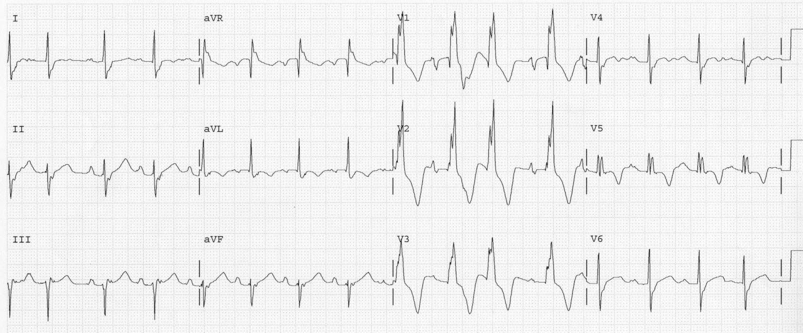
Và rằng khi LAD bị tắc ở một bệnh nhân như vậy, ST chênh lên rất kín đáo.

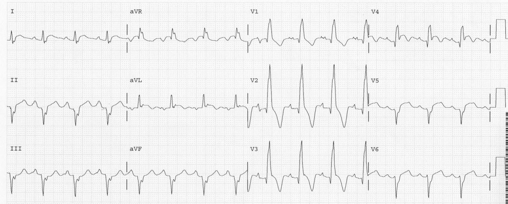

===================================
BÌNH LUẬN CỦA TÔI, bởi KEN GRAUER, MD (18/4/2025):
===================================
Tôi thấy ca hôm nay đầy thách thức dưới góc độ lâm sàng — nhưng cũng rất đáng tiếc vì bệnh nhân đã tử vong, đặt ra câu hỏi liệu kết cục có thể đã khác đi hay không nếu mức độ nghiêm trọng của tình trạng bệnh nhân được nhận ra sớm hơn.
- Điều làm việc đánh giá thêm phức tạp — là sự thiếu thông tin tại những thời điểm then chốt trong quá trình đánh giá bệnh nhân.
- Tôi tập trung bình luận vào những điện tâm đồ mà tôi thấy thách thức nhất.
Bệnh sử:
Các chi tiết về tiền sử và bệnh sử lúc đến khám của bệnh nhân không đầy đủ — nhưng lại rất liên quan đến cách tôi diễn giải điện tâm đồ ban đầu của ông. Từ những thông tin hạn chế được cung cấp — chúng ta rút ra được những điều sau:
- Người đàn ông 84 tuổi này có tăng huyết áp và CKD (bệnh thận mạn — Chronic Kidney Disease) — đến một phòng khám chăm sóc ban đầu vì mệt mỏi và choáng váng khi đi lại vài tuần nay, kèm hạ huyết áp tư thế đứng được ghi nhận tại phòng khám đó.
- Bệnh nhân kể có một đợt CP (đau ngực — Chest Pain) vào tuần trước lần khám này — nhưng các chi tiết khác về đợt CP đó không rõ. Ông không đau ngực vào thời điểm được khám.
Điện tâm đồ ban đầu (bản ghi PHÍA TRÊN trong Hình 1):
Tôi đã sao chép lại và đánh nhãn điện tâm đồ #1 dưới đây — đây là bản ghi được ghi lúc bệnh nhân hôm nay đến phòng khám chăm sóc ban đầu lần đầu tiên. Tôi không có trong tay điện tâm đồ trước đó vào lúc xem xét ca này lần đầu. Suy nghĩ của tôi về điện tâm đồ #1, khi xét đến bệnh sử nêu trên — như sau:
- Nhịp trong điện tâm đồ #1 là nhịp xoang tần số ~65/phút.
- QRS rất rộng (khoảng 0,15 giây). Mặc dù hình dạng QRS thoạt nhìn giống RBBB/LAHB — vẫn có những đặc điểm không điển hình. Bao gồm: i) Hình ảnh qR phân mảnh ở chuyển đạo V1 (thay vì dạng rsR’ ba pha vốn điển hình hơn cho dẫn truyền kiểu rbbb); và, ii) Hình dạng bất thường đối với dẫn truyền kiểu rbbb ở các chuyển đạo chi phía trái (sóng R nhỏ, bè ở chuyển đạo I với sóng S tận rất nhỏ — và hoàn toàn không có sóng S tận nào ở aVL).
- Đoạn ST dạng vòm (coving) lan tỏa kèm sóng T đảo ngược đối xứng khá sâu ở các chuyển đạo I,aVL; và ở khắp các chuyển đạo trước tim.
- Có một ít ST chênh lên ở các chuyển đạo V1-đến-V3 — dù tôi cho rằng mức độ này khiêm tốn, khi xét đến sóng T đảo ngược sâu và lan tỏa.
Nhận định của tôi về điện tâm đồ #1:
Như Hans Helseth đã nêu — điện tâm đồ ban đầu này, ghi tại phòng khám chăm sóc ban đầu, là cực kỳ bất thường.
- Dù vậy — tôi cho rằng điện tâm đồ #1 và bệnh sử nêu trên (tức là, không đau ngực trong tuần qua) gợi ý một biến cố gần đây (nhưng không cấp tính) — trong đó hiện chúng ta thấy một ít ST chênh lên tồn dư, với bức tranh chủ đạo là sóng T tái tưới máu ở 8/12 chuyển đạo.
- Dựa vào bệnh sử và điện tâm đồ — tôi đoán rằng biến cố này có lẽ đã bắt đầu từ vài tuần trước, vào lúc bệnh nhân bắt đầu mệt mỏi và choáng váng.
- Với tuổi của bệnh nhân, và đặc biệt là có hạ huyết áp tư thế đi kèm choáng váng — tôi cho rằng rõ ràng có chỉ định nhập viện để đánh giá kỹ lưỡng hơn.
- THÊM VÀO ĐÓ: Thay vì RBBB/LAHB trên điện tâm đồ ban đầu của ông — hình dạng QRS giống dẫn truyền kiểu rbbb ở các chuyển đạo trước tim nhưng lại giống dẫn truyền kiểu lbbb kèm trục lệch trái rõ rệt ở các chuyển đạo chi — gợi ý cho tôi hình ảnh được gọi là MBBB (blốc nhánh ngụy trang — Masquerading Bundle Branch Block) — điều này, nhất là khi xét đến tuổi và tình trạng hạ huyết áp tư thế của bệnh nhân, sẽ đặt ông vào nguy cơ cao tiến triển đột ngột thành một rối loạn dẫn truyền đe dọa tính mạng nếu cho về nhà. Thay vào đó — có thể cần đến tạo nhịp vĩnh viễn (Xem bên dưới).
- Dù vậy, và với ý thức đầy đủ rằng đôi khi, “Phải có mặt ở đó mới biết được” — tôi không cho rằng cần kích hoạt phòng thông tim ngay vào lúc này chỉ dựa trên điện tâm đồ #1 (tất nhiên là với giả định bệnh nhân vẫn không đau ngực, và không có troponin tăng đáng kể hay thay đổi trên các điện tâm đồ liên tiếp).
Suy nghĩ của tôi về xử trí:
Diễn tiến của các biến cố và mức độ nặng của tình trạng bệnh nhân hẳn đã trở nên rõ ràng trong một đợt nằm viện ngắn. Thông tim không cấp cứu có lẽ cũng đã là một phần của đợt đánh giá tại bệnh viện này.
- Tôi xem việc bệnh nhân này được cho về nhà từ phòng khám chăm sóc ban đầu là điều đáng tiếc.

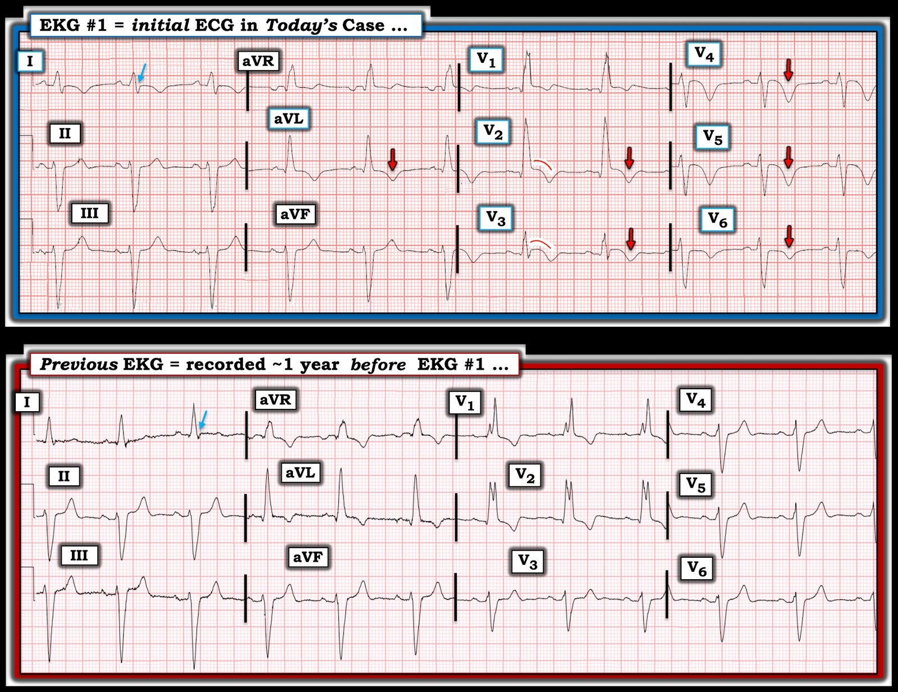
Điện tâm đồ trước đó (bản ghi PHÍA DƯỚI trong Hình 1):
Như Hans Helseth đã nêu — một điện tâm đồ trước đó, ghi ~1 năm trước, đã được tìm thấy trong quá trình đánh giá tiếp theo của bệnh nhân. Tôi đưa nó vào đây, cùng với điện tâm đồ #1 để tiện so sánh — nhằm minh họa những điều sau:
- Hình dạng QRS và tình trạng QRS giãn rộng rõ rệt mà chúng ta thấy ở điện tâm đồ #1 — khá giống với những gì đã có sẵn trên bản ghi trước đó (cụ thể là giống dẫn truyền kiểu rbbb ở các chuyển đạo ngực — nhưng trông giống dẫn truyền kiểu lbbb hơn, kèm trục lệch trái rõ rệt, ở các chuyển đạo chi — với không hơn một dấu vết của sóng S tận ở chuyển đạo I của điện tâm đồ trước đó).
- Sóng q ở chuyển đạo V2 đã có sẵn trên điện tâm đồ trước đó — gợi ý rằng các bất thường QRS là hậu quả của nhồi máu cũ.
- NHƯNG — tình trạng ST dạng vòm (coving), ST chênh lên và sóng T đảo ngược sâu, đối xứng mà chúng ta thấy ở điện tâm đồ #1 thì không có trên bản ghi trước đó! Vậy tất cả những thay đổi đó đều là mới!
=================================
Thêm về MBBB (blốc nhánh ngụy trang – Masquerading Bundle Branch Block):
Tình trạng QRS giãn rộng khi có nhịp xoang, trong đó hình dạng QRS phù hợp với dẫn truyền kiểu RBBB ở các chuyển đạo ngực — nhưng lại là dẫn truyền kiểu LBBB ở các chuyển đạo chi (đặc biệt khi có trục lệch trái) — gợi ý thực thể được biết đến là MBBB (Dhanse và cs.: J Cin Diagn Res, 2016). — và — Sakai và cs.: J Clin & Med Case Reports, 2021). Tôi cho rằng điều này phù hợp với hình ảnh hình dạng QRS mà chúng ta thấy ở điện tâm đồ trước đó của ca hôm nay.
- MBBB là một thể đặc biệt của IVCD — tuy không phổ biến nhưng quan trọng cần nhận ra, vì nó xác định một nhóm bệnh nhân có: i) Bệnh tim nền rất nặng; ii) Khuynh hướng tiến triển thành blốc AV hoàn toàn cao hơn nhiều (và cần đến máy tạo nhịp); và, iii) Tiên lượng dài hạn cực kỳ xấu.
- LƯU Ý #1: Các biến thể của “chủ đề” MBBB nêu trên là thường gặp. Do đó, sóng S thường đi kèm hình ảnh RBBB ở các chuyển đạo ngực bên V5,V6 có thể có hoặc không. Ở các chuyển đạo chi, thay vì hình ảnh LBBB điển hình — có thể thấy hình ảnh giống LAHB cực độ (blốc phân nhánh trái trước – Left Anterior HemiBlock) hơn (tức là, với các phức bộ QRS rộng và chủ yếu âm [nếu không phải âm hoàn toàn] ở các chuyển đạo dưới — và với sóng s tận nhỏ hơn [bị cùn] ở chuyển đạo I và aVL).
LƯU Ý #2: Biết tiền sử lâm sàng có thể giúp nhận ra các hình ảnh IVCD phù hợp với MBBB (tức là, nếu bệnh nhân có tiền sử bệnh tim nền nặng đã biết).
- Việc phân biệt với blốc hai phân nhánh đơn thuần (tức là, với RBBB/LAHB) — có thể dễ dàng hơn khi thấy một hoặc nhiều dấu hiệu sau: i) QRS dương ở V1 mang tính đơn dạng hơn (thiếu dạng rsR’ ba pha rõ nét với “tai thỏ” bên phải cao hơn như thường thấy ở RBBB điển hình); ii) Không có sóng S tận rộng ở chuyển đạo ngực bên V6; iii) Thấy QRS giãn rộng dương hoàn toàn (hoặc ít nhất là chủ yếu dương) ở chuyển đạo I và/hoặc aVL, với không quá một sóng s nhỏ, hẹp ở các chuyển đạo này; và/hoặc, iv) Thấy các phức bộ QRS giãn rộng, âm hoàn toàn (hoặc gần như âm hoàn toàn) ở các chuyển đạo dưới.
Liên quan gì đến ca hôm nay?
Mặc dù không khai thác được tiền sử rõ ràng về các cơn ngất trong ca hôm nay — bệnh nhân cao tuổi này có những triệu chứng khác có thể phù hợp với bệnh lý hệ thống dẫn truyền nặng — điện tâm đồ của ông cho thấy QRS giãn rộng rõ rệt không do tăng kali máu — thông tim cho thấy bệnh nhiều nhánh mạch vành — và cơn ngừng tim cuối cùng của bệnh nhân được đánh dấu bằng blốc AV, rồi sau cùng là ngưng thất.
=================================
Ca bệnh tiếp diễn:
Như đã nêu ở trên — bệnh nhân 84 tuổi này không được nhập viện từ phòng khám chăm sóc ban đầu nơi ông được khám lần đầu. Thay vào đó, ông được cho về nhà — để rồi quay lại 5 ngày sau vì đau ngực dữ dội xảy ra trong lúc vận động gắng sức không được theo dõi — tiến triển thành nhồi máu diện rộng và cuối cùng dẫn đến cơn ngừng tim khiến ông tử vong (chi tiết các diễn biến này đã được Hans Helseth trình bày ở trên).
Tôi thấy điện tâm đồ #2 trong ca hôm nay đặc biệt thú vị và đáng để xem kỹ hơn (điện tâm đồ #2 là bản ghi đầu tiên được ghi 5 ngày sau lần khám ở phòng khám chăm sóc ban đầu — vào lúc bệnh nhân này đến khoa cấp cứu (ED) tại địa phương).
- Điện tâm đồ #2 là một bản ghi phức tạp …
- Đáng ngạc nhiên là — bệnh nhân không bị đau ngực vào lúc ghi điện tâm đồ #2.
- Việc không ghi lại điện tâm đồ nào trong 2.5 giờ sau điện tâm đồ #2 cho thấy những dấu hiệu MẤU CHỐT trong bản ghi đầy thử thách này đã bị bỏ sót … (Tôi tự hỏi điện tâm đồ #2 đã được xử trí ra sao — và điều gì đã xảy ra trong 2.5 giờ cho đến khi điện tâm đồ #3 cuối cùng mới được ghi?).
- Bạn có thể tìm ra điều gì đang diễn ra ở điện tâm đồ #2 không?

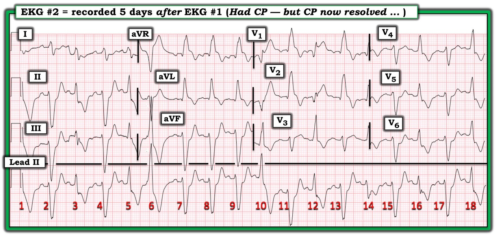
=================================
Cách tiếp cận của tôi với điện tâm đồ #2 (Xem Hình 3 bên dưới):
Như tôi đã nêu ở trên — đây là một bản ghi phức tạp — các phức bộ QRS rộng — tần số nhanh — và thấy nhiều hình dạng QRS khác nhau.
- Như thường gặp với các rối loạn nhịp phức tạp — bước đơn giản là đánh dấu sóng P thường cung cấp manh mối MẤU CHỐT cho biết điều gì đang diễn ra.
- Từ các bản ghi trước đó của bệnh nhân này, chúng ta biết rằng — khi có nhịp xoang, phức bộ QRS rất rộng và biểu hiện hình dạng MBBB.
- Nhìn vào dải nhịp chuyển đạo II dài — các sóng P đánh dấu bằng mũi tên ĐỎ giúp tôi nhận ra nhịp nhanh xoang với hình dạng QRS tương tự như ở điện tâm đồ #1. Các sóng P xoang đều đặn hiện diện suốt dải nhịp chuyển đạo II dài này!
- Dẫn truyền xoang này dễ thấy nhất khi tập trung vào 3 nhát #7,8,9 dẫn truyền từ xoang liên tiếp ở chuyển đạo II dài. (Các nhát dẫn truyền từ xoang khác trong bản ghi này là các nhát #2,4,11,13,15,17).
- Nhát MẤU CHỐT — là nhát #6. Lưu ý các mũi tên ĐỎ đôi làm nổi bật sóng P xoang đúng lúc xuất hiện ngay trước QRS của nhát #6, với khoảng PR quá ngắn để có thể dẫn truyền nhát #6! Điều này cho chúng ta biết nhát #6 là một PVC (ngoại tâm thu thất – Premature Ventricular Contraction).
- Lưu ý rằng từng nhát có-sóng-R-dương khác ở chuyển đạo II dài đều có kích thước nhỏ hơn nhát #6. Cũng lưu ý rằng mỗi nhát này (tức là, các nhát #3,5,10,12,14,16,18) đều có sóng P đi trước.
- Điều khiến bản ghi này rất khó đọc là nhịp nhanh nền — khiến khó xác định liệu khoảng PR đi trước các nhát #3,5,10,12,14,16,18 có ngắn hơn một chút so với khoảng PR trước các nhát dẫn truyền từ xoang hay không. Nhưng tất cả các nhát này trông đều có hình dạng QRS trung gian giữa các nhát dẫn truyền từ xoang và nhát #6 mà chúng ta biết là PVC. Điều này thấy rõ nhất ở chuỗi nhát #4 (là nhát dẫn truyền từ xoang) — nhát #6 (mà chúng ta biết là PVC “thuần”) — và nhát #5 (biểu hiện QRS và sóng T có hình dạng trung gian giữa hình dạng QRST của nhát #4 và #6). Điều này cho chúng ta biết nhát #5 là một nhát hỗn hợp (F).
- Mỗi nhát có-sóng-R-dương khác cũng đều là nhát hỗn hợp. Lý do có sự khác biệt về hình dạng QRS của các nhát #3,5,10,12,14,16,18 — là do các mức độ hỗn hợp khác nhau.
- ĐIỂM THEN CHỐT: Hãy nhìn hình dạng của nhát hỗn hợp #12 ở các chuyển đạo V1 và V2 ghi đồng thời. Theo các mũi tên XANH LÁ ở 2 chuyển đạo này — sóng ST-T của nhát #12 ở chuyển đạo V1,V2 có giá trị chẩn đoán OMI LAD cấp. Do đó điện tâm đồ #2 — là một ví dụ tuyệt vời cho thấy sóng ST-T của các nhát thất (trong ca này là một nhát hỗn hợp) đôi khi có thể có giá trị chẩn đoán OMI cấp hơn so với các nhát dẫn truyền từ xoang.

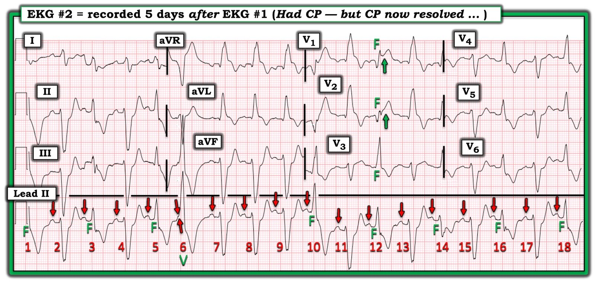